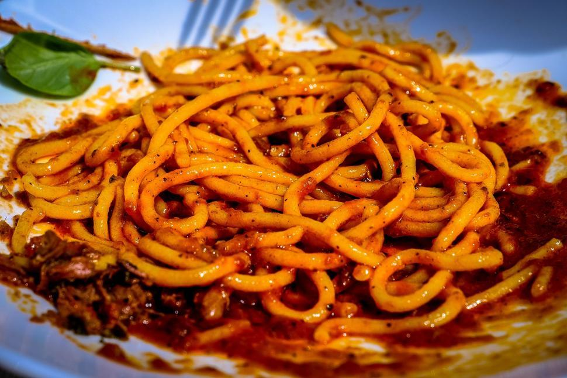

Home
Spaghetti

Description
This homemade recipe creates a classic dish of spaghetti with meat-sauce that will fill any hungry stomach.
Ingredients
- Spaghetti Noodles
- 1 lb. Ground Beef or Venison
- 1 Jar of Spaghetti Sauce
- Parmesan Cheese
Steps
- Boil water in a medium pot. Add salt to taste.
- While you wait on the water to boil, brown the ground meat in a skillet.
- Once the water has come to a boil, add the noodles to the water.
- When the meat is brown, drain the grease and add the sauce to the same skillet.
- After the noodles have finished cooking, drain the water.
- Put some noodles in a small bowl to serve.
- Add the meat-sauce on top of the noodles.
- Top it off with some permesan cheese.
- Enjoy!